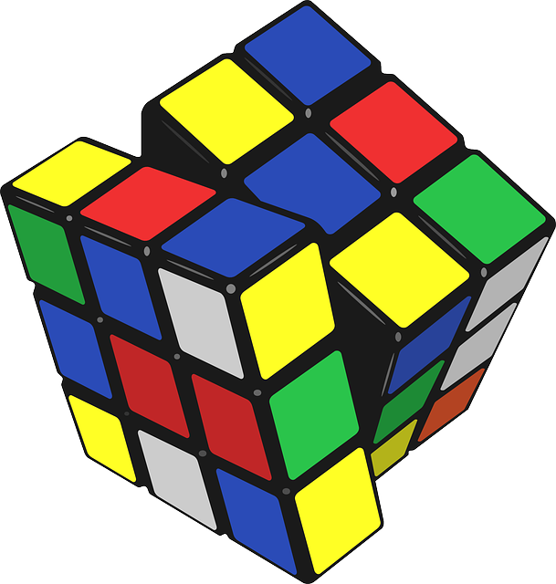

Ãvod
Rubikova kocka je mechanický hlavolam, ktorý v roku 1974 vynaÅ¡iel maÄarský sochár a architekt ErnÅ Rubik. Bol výnimoÄne obľúbený v 70. a 80. rokoch 20. storoÄia, keÄ sa vyrábal v miliónových sériách.
Má podobu plastovej kocky, ktorá sa skladá z menÅ¡Ãch rôznofarebných kociek, Å¡tandardne ich má 3Ã3Ã3. Existujú vÅ¡ak aj ÄalÅ¡ie varianty: 2Ã2Ã2 ("vrecková"), 4Ã4Ã4 (tzv."Rubikova pomsta"), 5Ã5Ã5 a iné. Malé kocky sú prepojené pohyblivým mechanizmom, ktorý umožÅuje ľubovoľnú vrstvu 9 kociek otoÄiÅ¥ o násobok 90°.
